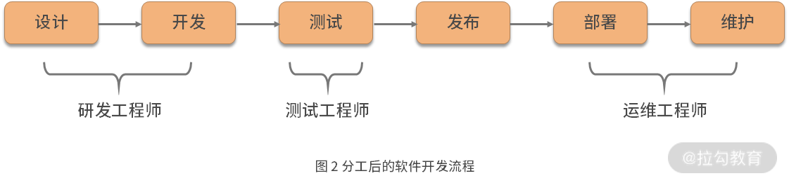
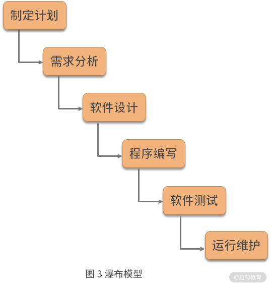
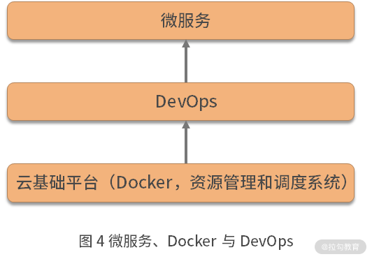
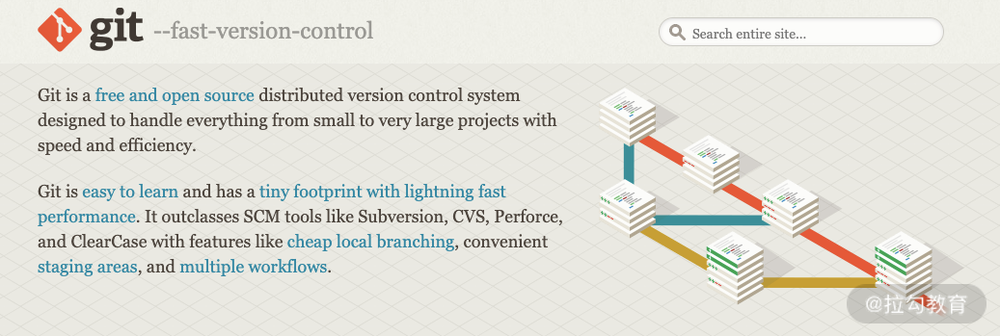
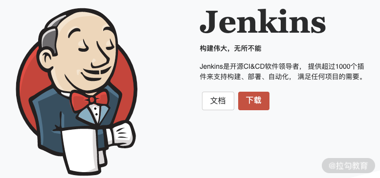
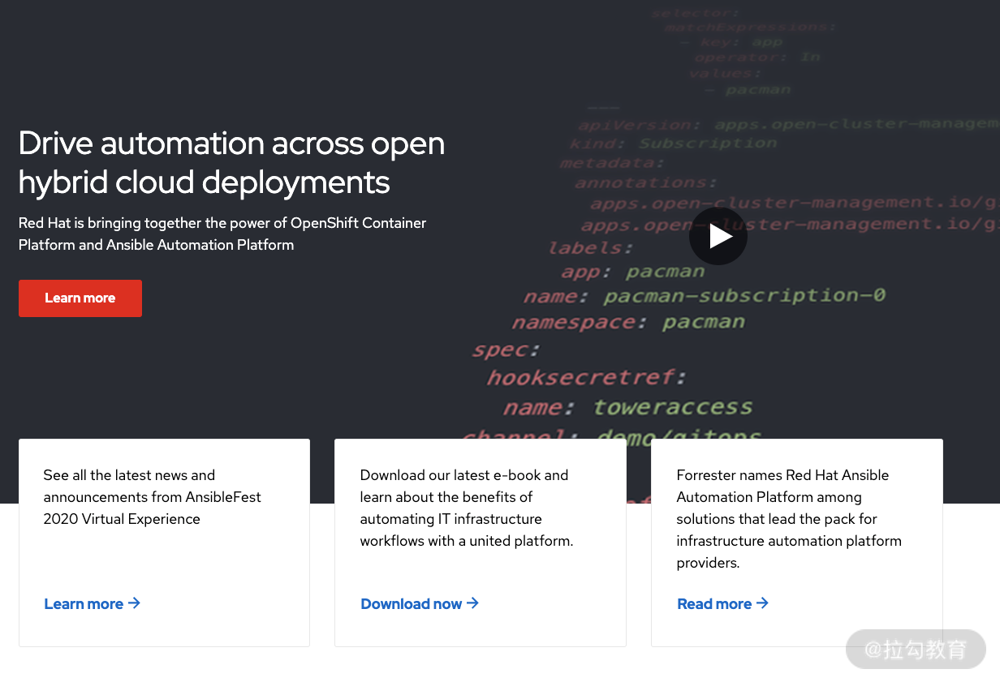

- 00 溯本求源，吃透 Docker！.md.html
- 01 Docker 安装：入门案例带你了解容器技术原理.md.html
- 02 核心概念：镜像、容器、仓库，彻底掌握 Docker 架构核心设计理念.md.html
- 03 镜像使用：Docker 环境下如何配置你的镜像？.md.html
- 04 容器操作：得心应手掌握 Docker 容器基本操作.md.html
- 05 仓库访问：怎样搭建属于你的私有仓库？.md.html
- 06 最佳实践：如何在生产中编写最优 Dockerfile？.md.html
- 07 Docker 安全：基于内核的弱隔离系统如何保障安全性？.md.html
- 08 容器监控：容器监控原理及 cAdvisor 的安装与使用.md.html
- 09 资源隔离：为什么构建容器需要 Namespace ？.md.html
- 10 资源限制：如何通过 Cgroups 机制实现资源限制？.md.html
- 11 组件组成：剖析 Docker 组件作用及其底层工作原理.md.html
- 12 网络模型：剖析 Docker 网络实现及 Libnetwork 底层原理.md.html
- 13 数据存储：剖析 Docker 卷与持久化数据存储的底层原理.md.html
- 14 文件存储驱动：AUFS 文件系统原理及生产环境的最佳配置.md.html
- 15 文件存储驱动：Devicemapper 文件系统原理及生产环境的最佳配置.md.html
- 16 文件存储驱动：OverlayFS 文件系统原理及生产环境的最佳配置.md.html
- 17 原理实践：自己动手使用 Golang 开发 Docker（上）.md.html
- 18 原理实践：自己动手使用 Golang 开发 Docker（下）.md.html
- 19 如何使用 Docker Compose 解决开发环境的依赖？.md.html
- 20 如何在生产环境中使用 Docker Swarm 调度容器？.md.html
- 21 如何使 Docker 和 Kubernetes 结合发挥容器的最大价值？.md.html
- 22 多阶级构建：Docker 下如何实现镜像多阶级构建？.md.html
- 23 DevOps：容器化后如何通过 DevOps 提高协作效能？.md.html
- 24 CICD：容器化后如何实现持续集成与交付？（上）.md.html
- 25 CICD：容器化后如何实现持续集成与交付？（下）.md.html
- 26 结束语 展望未来：Docker 的称霸之路.md.html
23 DevOps：容器化后如何通过 DevOps 提高协作效能？
提到 DevOps 相信很多人并不陌生，DevOps 作为一个热门的概念，近几年被提及的频率也越来越高。有些人说它是一种方法论，有些人说它是一堆工具，有些人说它是企业的一种管理模式。那么，DevOps 究竟是什么呢？Docker 在 DevOps 中又扮演了什么角色呢？今天，我们就来详细聊聊这个话题。
DevOps 的前生今世
1964 年，世界上的第一台计算机诞生，那时的计算机主要用于军事领域。计算机的运行离不开程序，那时负责编程的人员被称之为“程序员”。由于那时的程序比较简单，很多工作可以一个人完成，所以早期的计算软件交付流程是这样的：设计—开发—自测—发布—部署—维护。如图 1 所示：
然而，随着计算机的发展和普及，越来越多的人接触到了计算机，这时的计算机也开始逐渐应用于商业领域，市场上出现了越来越多的办公、游戏等“软件”，也有越来越多的人开始从事软件开发这个行业，而这些软件开发者也有了更加专业的称呼“软件开发工程师”。
后来，又随着计算机软件规模的增大，软件也越来越复杂，这时一个人已经无法完成一个软件完整的生命周期管理。一个软件的开发需要各个团队的分工配合，同时职能划分也需要更加细化，整个软件管理流程中除了软件工程师外又增加了测试工程师和运维工程师。
分工之后软件开发流程如下：研发工程师做代码设计和开发，测试工程师做专业的测试工作，运维工程师负责将软件部署并负责维护软件。如图 2 所示：

这种软件开发模式被称为瀑布模型，这种模式将软件生命周期划分为制定计划、需求分析、软件设计、程序编写、软件测试和运行维护等六个基本活动，并且规定了它们自上而下、相互衔接的固定次序，如瀑布流水一样，逐级的下降。

瀑布模型的模式十分理想化，它假定用户需求十分明确，开发时间十分充足，且项目是单向迭代的。但随着互联网的出现，软件迭代速度越来越快，软件开发越来越“敏捷”，这时候大名鼎鼎的“敏捷开发”出现了，敏捷开发把大的时间点变成细小的时间点，快速迭代开发，软件更新速度也越来越快。
敏捷开发对传统的开发、测试、运维模式提出了新的挑战，要求更快的开发速度和更高的软件部署频率。而运维工程师信奉的则是稳定性压倒一切，不希望软件频繁变更而引发新的问题。于是乎，敏捷开发和运维工程师之间的矛盾便诞生了。
敏捷开发使得开发和运维工程师之间的矛盾变得越来越深，为了解决这个问题，DevOps 诞生了。DevOps 是研发工程师（Development）和运维工程师（Operations）的组合。下面是维基百科对 DevOps 的定义：
DevOps（Development 和 Operations 的组合词）是一种重视“软件开发人员（Dev）”和“IT 运维技术人员（Ops）”之间沟通合作的文化、运动或惯例。透过自动化“软件交付”和“架构变更”的流程，来使得构建、测试、发布软件能够更加地快捷、频繁和可靠。
DevOps 的整体目标是促进开发和运维人员之间的配合，并且通过自动化的手段缩短软件的整个交付周期，提高软件的可靠性。
微服务、容器与 DevOps
软件开发早期，业务模型简单，很多功能都放在一个服务中，这时的服务称之为单体服务，然而随着业务功能越来越复杂，我们发现这种单体服务功能过于复杂，容易牵一发而动全身，导致开发维护成本很高，软件迭代成本也越来越高。
这时，软件开发者开始将单体服务拆分为多个小型服务，每一个小型服务独立负责一项任务，各个小型服务之间通过某种方式（RPC 或者 HTTP）相互调用，然后将不同的服务可以分发给不同的业务团队来开发，各个业务团队可以选择适合自己的编程语言来进行开发。
如果想要微服务实现更快的迭代和更加可靠的稳定性，一定是离不开一个一体化的 DevOps 平台，DevOps 的目标是构建一个稳定可靠的软件生命周期管理环境。所以它不仅可以帮助我们节省很多研发、测试和运维成本，还可以极大地提高我们的软件迭代速度，可以说微服务要想顺利实施，离不开 DevOps 的思想作为指导。
在 Docker 技术出现之前，人们通常更加关注如何做好 CI（Continuous Integration，持续集成）/CD（Continuous Delivery持续交付）以及 IAAS（基础设施即服务），这时我们称之为 DevOps 1.0 时代。
随着 Docker 技术的诞生，我们开始迎来了 DevOps 2.0 时代，DevOps 所有的这些需求都与 Docker 所提供的能力极其匹配。首先 Docker 足够轻量，可以帮助我们的微服务实现快速迭代。其次 Docker 可以很方便地帮助我们构建任何语言的运行环境，帮助我们顺利地使用多种语言来开发的我们的服务，最后 Docker 可以帮助我们更好地隔离开发环境和生产环境。
可以说 Docker 几乎满足了微服务的所有需求，Docker 为 DevOps 提供了很好的基础支撑。
这时的研发和运维都开始关注软件统一交付的格式和软件生命周期的管理，而不像之前一样研发只关注“打包前”，而运维只关注“打包后”的模式，DevOps 无论是研发环境还是生产环境都开始围绕 Docker 进行构建。

综上所述，微服务、Docker 与 DevOps 三者之间的关系，如上图所示。
- 云平台作为底层基础，采用 Docker 技术将服务做容器化部署，并且使用资源管理和调度平台（例如 Kubernetes 或 Swarm）来自动化地管理容器。
- DevOps 平台在云基础平台之上，通过流程自动化以及工具自动化的手段，为可持续集成和交付提供能力支持。
- 有了云平台和 DevOps 的支撑，微服务才能够发挥更大的作用，使得我们的业务更加成熟和稳定。
容器如何助力 DevOps
Docker 可以在 DevOps 各个阶段发挥重要作用，例如 Docker 可以帮助我们在开发阶段提供统一的开发环境，在持续集成阶段帮助我们快速构建应用，在部署阶段帮助我们快速发布或更新生产环境的应用。
下面我们来详细认识一下 Docker 在整个 DevOps 阶段究竟发挥了哪些作用。
开发流程
开发人员可以在本地或者开发机上快速安装一个 Docker 环境，然后使用 Docker 可以快速启动和部署一个复杂的开发环境。相比传统的配置开发环境的方式，不仅大大提升了开发环境部署的效率，同时也保证了不同开发人员的环境一致。
集成流程
通过编写 Dockerfile 可以将我们的业务容器化，然后将我们的 Dockerfile 提交到代码仓库中，在做持续集成的过程中基于已有的 Dockerfile 来构建应用镜像，可以极大提升持续集成的构建速度。
这主要是因为 Docker 镜像使用了写时复制（Copy On Write）和联合文件系统（Union FileSystem）的机制。Docker 镜像分层存储，相同层仅会保存一份，不同镜像的相同层可以复用，比如 Golang 容器在一次构建停止后，镜像已经存在于构建机上了，当我们开始新一轮的测试时，可以直接复用已有的镜像层，大大提升了构建速度。
部署流程
镜像仓库的存在使得 Docker 镜像分发变得十分简单，当我们的镜像构建完成后，无论在哪里只需要执行 docker pull 命令就可以快速地将镜像拉取到本地并且启动我们的应用，这使得应用的创建或更新更快、更高效。
另外，Docker 结合 Kubernetes 或者其他容器管理平台，可以轻松地实现蓝绿发布等流程，当我们升级应用观察到流量异常时，可以快速回滚到稳定版本。
DevOps 工具介绍
工欲善其事，必先利其器，要想顺利落地 DevOps，工具的选择十分重要，下面我们来看下除了Docker 外还有哪些工具可以帮助我们顺利地构建 DevOps 平台。
Git

Git 是一种分布式的版本控制工具， 是目前使用最广泛的 DevOps 工具之一。Git 相比于其他版本控制工具，它可以实现离线代码提交，它允许我们提交代码时未连接到 Git 服务器，等到网络恢复再将我们的代码提交到远程服务器。
Git 非常容易上手，并且占用空间很小，相比于传统的版本控制工具（例如：Subversion、CVS 等）性能非常优秀，它可以帮助我们快速地创建分支，使得团队多人协作开发更加方便。
目前全球最大的在线 Git 代码托管服务是 GitHub，GitHub 提供了代码在线托管服务，可以帮助我们快速地将 DevOps 工作流集成起来。除了 GitHub 外，还有很多在线代码托管服务，例如 GitLab、Bitbucket 等。
Jenkins

Jenkins 是开源的 CI/CD 构建工具，Jenkins 采用插件化的方式来扩展它的功能，它拥有非常丰富的插件，这些插件可以帮助我们实现构建、部署、自动化等流程。它还拥有强大的生态系统，这些生态系统可以很方便地与 Docker 和 Kubernetes 集成。Jenkins 几乎可以和所有的 DevOps 工具进行集成。
Ansible

Ansible 是一个配置管理工具。Ansible 可以帮助我们自动完成一些重复的 IT 配置管理，应用程序部署等任务，还可以帮助我们放弃编写繁杂的 shell 脚本，仅仅做一些 YAML 的配置，即可实现任务下发和管理工作。并且 Ansible 的每一行命令都是幂等的，它允许我们多次重复执行相同的脚本并且得到的结果都是一致的。
Kubernetes

Kubernetes 是当前最流行的容器编排工具之一，Docker 帮助我们解决了容器打包和镜像分发的问题，而 Kubernetes 则帮助我们解决了大批量容器管理和调度的问题，它可以打通从研发到上线的整个流程，使得 DevOps 落地更加简单方便。
结语
DevOps 虽然已经被提及很多年，但是一直没有很好的落地，直到 2013 年 Docker 的诞生，才使得 DevOps 这个理念又重新火了起来，因为 Docker 为我们解决了应用的构建、分发和隔离的问题，才使得 DevOps 落地变得更加简单。
DevOps 提倡小规模和增量的服务发布方式，并且 DevOps 还指导我们尽量避免开发大单体（把所有的功能都集成到一个服务中）应用，这一切，都与 Docker 所能提供的能力十分匹配。因此，Docker 是非常重要的 DevOps 工具。
那么，除了我介绍的这些 DevOps 工具，你还知道其他的 DevOps 工具吗？